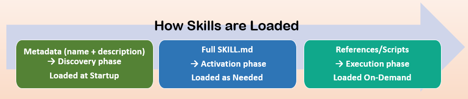
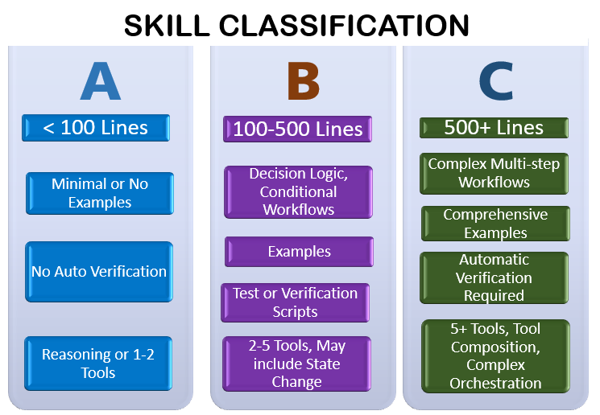
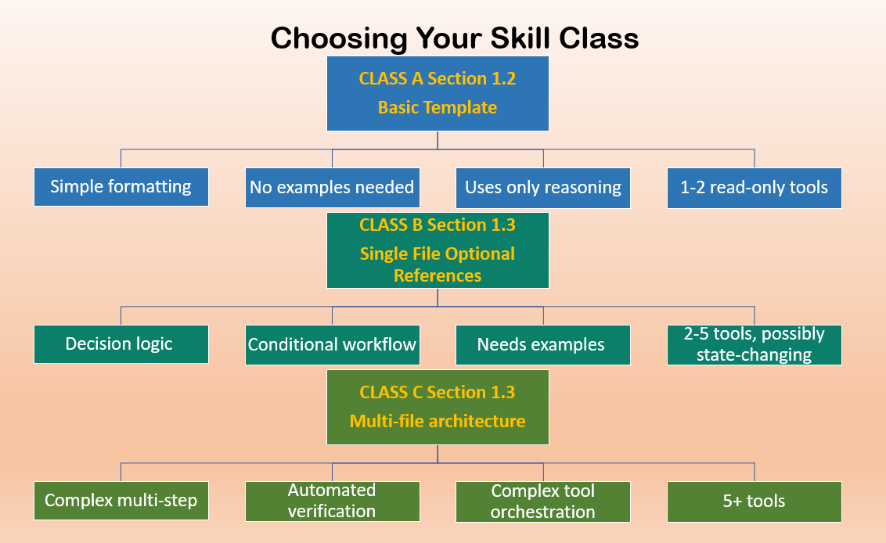
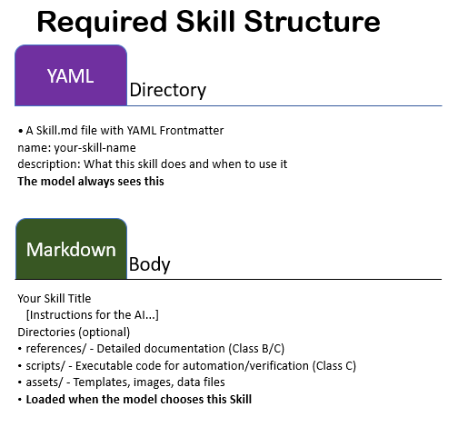
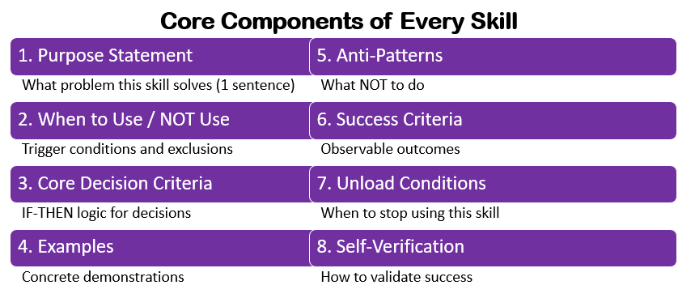
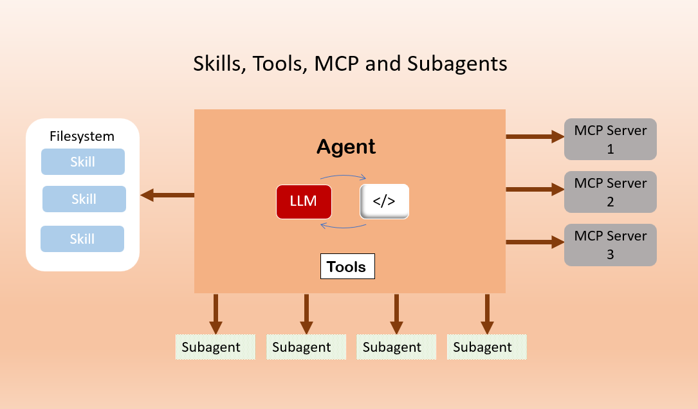
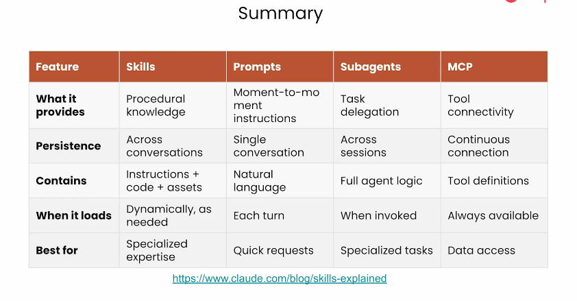

Skills¶
Section 1.1: Skill Anatomy (The Backbone)¶
Learning Objective: Understand what skills are, how they work, and which approach fits your needs.
What Are Skills?¶
A skill is a structured document that provides specialized knowledge or workflows to an AI agent. Think of it as giving the AI a reference manual it can consult when needed.
Different platforms use different terms¶
- Anthropic: Skills (SKILL.md)
- OpenAI/Microsoft: Instructions (AGENTS.md, instructions.md)
- Google: System Instructions
- Open Source: Varies (README.md, INSTRUCTIONS.md, custom) In this guide, we use "skill" as the generic term for any agent knowledge document.
How Skills Work: Progressive Disclosure¶
Skills use a three-phase approach to manage AI context efficiently.
Phase 1: Discovery¶
At startup, the AI loads only the name and description of each available skill- just enough to know when it might be relevant.
Discovery Example
<skill>
<name>sql-query-optimization</name>
<description>Optimize slow SQL queries for PostgreSQL and MySQL.
Use when query execution time exceeds 1 second.</description>
</skill>
The AI sees this lightweight summary for ALL skills without using much context.
Phase 2: Activation¶
When a task matches a skill's description, the AI reads the full instructions into its working context. Why this matters: The AI only loads detailed instructions when needed, preventing context overload.
Phase 3: Execution¶
The AI follows the instructions, optionally loading additional resources (reference files, scripts) as needed.
How Skills Are Actually Loaded¶

In practice, skills are loaded by agents as:
1. Metadata (name + description) → Discovery phase¶
- Always loaded at startup
- Enables skill discovery without context overhead
- ~50-100 tokens per skill
2. Full SKILL.md → Activation phase¶
- Loaded as needed when skill is triggered
- Full instructions enter context
- ~500-5000 tokens depending on skill
3. References/Scripts → Execution phase¶
- Loaded as needed during task execution
- Loaded on-demand via explicit commands
- Only what's required, when it's required This progressive approach keeps AI fast while giving it access to deep knowledge on demand.
Platform Implementation Reality¶
Skills work best on Anthropic Claude (native API support, progressive disclosure built-in).
Native Support¶
- Anthropic Claude
- Claude.ai: Web interface with native Skills support
- Claude API: Programmatic access with Skills parameter
- Claude Code: Terminal-based agentic coding with Skills
-
Claude Desktop: Includes Cowork for autonomous tasks
Note: You can prompt Claude in Cowork to build a skill, which involves defining the desired output, formatting, and task steps. Claude will generate it for you.
Usage in Cowork: Once created or uploaded, skills can be toggled on to automate tasks. You can manage them in the Customize section of the application.
Requirement in Cowork: Skills require code execution to be enabled. See Anthropic support docs for latest status. -
Zip-and-upload simplicity
- Automatic progressive disclosure
- Full feature support
Manual Injection Required¶
- OpenAI (Assistants API, Codex with $skill-installer)
- Google Gemini (system_instruction parameter) Requires reading SKILL.md and injecting into system prompt
- No automatic progressive disclosure
- May hit token limits with multiple skills
This curriculum teaches the Anthropic approach, which represents the intended design pattern. As the ecosystem matures, expect other platforms to adopt native skill support.
→ For platform-specific implementation code, see Appendix D: Cross-Platform Implementation (Updated Jan 2026)
Skill Classification System¶
Skills are classified by complexity, which determines the appropriate template and architecture.

Class A: Simple Skills¶
Characteristics:
- Formatting rules, style guides, organizational constraints
- < 100 lines typical
- Minimal or no examples needed
- User validates output (no automated verification)
- Tool usage: Reasoning only OR 1-2 read-only tools
Class A Examples¶
- "Always use Oxford commas in documentation"
- "Format dates as YYYY-MM-DD"
- "Use company disclaimer in client emails" Architecture: Single-file (SKILL.md only)
→ Use Section 1.2 (Basic Skills Template)
Class B: Intermediate Skills¶
Class B Characteristics¶
- Decision logic, conditional workflows
- 100-500 lines typical
- Examples required for clarity
- Tests or verification scripts helpful
- Tool usage: 2-5 tools, may include state-change tools
Class B Examples¶
- "Email formatting with contact directory lookup"
- "Code review following team standards"
- "Content moderation with escalation rules" Architecture: Single-file with optional references/
→ Use Section 1.3 (Advanced Skills) for multi-file architecture
Class C: Advanced Skills¶
Class C Characteristics¶
- Complex multi-step workflows, verification-critical
- 500+ lines (requires multi-file architecture)
- Comprehensive examples required
- Automated verification essential
- Tool usage: 5+ tools, complex orchestration, tool composition
Class C Examples¶
- "SQL query optimization with automated verification"
- "Security code review with vulnerability scanning"
- "Multi-stage data pipeline with validation" Architecture: Multi-file (SKILL.md + references/ + scripts/)
→ Use Section 1.3 (Advanced Skills)
Choosing Your Skill Class: Decision Tree¶

The Agent Skills Standard¶
Skills follow an open standard that works across platforms (Anthropic, OpenAI, Google, and others). Agent Skills are folders of instructions, scripts, and resources that agents can discover and use to do things more accurately and efficiently. Agent Skills open standard represents a significant advancement in AI technology, providing a framework for enhanced functionality, interoperability, and enterprise management in AI applications. https://agentskills.io/home
Required Structure-Every skill must have¶

1- Directory¶
- A directory with the skill name
your-skill-name/
2- A SKILL.md file with YAML frontmatter¶
YAML frontmatter¶
- Required in YAML (minimum)
name: your-skill-name
description: What this skill does and when to use it
Optional YAML Additions¶
-
Documentation Fields (optional) — Describe the Skill for humans and version control
-
license- Licensing information compatibility- Environment requirements-
metadata- Additional properties (author, version, etc.) -
Behavioral Fields (optional) — Control how the Skill executes
-
context: fork- Runs the Skill in an isolated sub-agent context, separate from the main conversation. Use for verbose or exploratory Skills to prevent attentional residue from accumulating in the main session. allowed-tools- Restricts which tools the Skill can access during execution. Use to enforce least-privilege access and prevent accidental destructive actions (aligns with Class A/B/C risk classification).-
argument-hint- Prompts the user for required parameters when the Skill is invoked without arguments. Use when the Skill requires specific inputs (file path, target language, domain) to function correctly. -
Note:
- Documentation fields describe the Skill.
- Behavioral fields change how it runs. Missing behavioral fields doesn't break a Skill, but using them correctly improves reliability and safety, especially for Class B and C Skills.
Markdown body with instructions¶
Your Skill Title
[Instructions for the AI...]
This is where you provide the instructions for the model. It is recommended that 8 component structure is used.
Skill- Optional Reference Files¶
- references/ - Detailed documentation (Class B/C)
- scripts/ - Executable code for automation/verification (Class C)
- assets/ - Templates, images, data files → For complete specification details, see the Agent Skills Standard
Core Components of Every Skill¶
***Regardless of class (A/B/C), every effective skill contains these elements:**

The 8 Essential Components¶
-
Purpose Statement - What problem this skill solves (1 sentence)
-
When to Use / NOT Use - Trigger conditions and exclusions
-
Core Decision Criteria - IF-THEN logic for decisions
-
Examples - Concrete demonstrations
-
Anti-Patterns - What NOT to do
-
Success Criteria - Observable outcomes
-
Unload Conditions - When to stop using this skill
-
Self-Verification - How to validate success
How components scale by class¶
- Class A: Minimal versions (purpose + basic triggers + simple pattern)
- Class B: Standard versions (all components, moderate detail)
- Class C: Comprehensive versions (components + references + scripts)
You'll learn how to implement each component in-¶
- Section 1.2 (Basic approach for Class A)
- Section 1.3 (Advanced approach for Class B/C)
- Section 1.5 (Deep dive - comprehensive guide to each component)
Semantic Tags: A Model-Optimized Approach¶
Skills use XML-style semantic tags to signal importance and structure to AI models.
XML Example¶
Why tags instead of bold text or emojis?¶
- AI models are trained on XML/HTML structures
- Tags have clear, unambiguous semantic meaning
- No tokenization issues or accessibility problems
- Can be parsed and validated programmatically
Basic tags you'll use immediately¶
<critical> - Must-follow instructions
<good_pattern> - Recommended approaches
<bad_pattern> - Approaches to avoid
→ For the complete tag system (18 tags), see Section 1.4 (Semantic Tags)
Context Management: The Critical Constraint¶
The most important thing to understand about skills:
AI context fills up fast, and performance degrades as it fills. Every message, every file read, every command output consumes context. A single debugging session might use tens of thousands of tokens.
When context is nearly full:
- AI may "forget" earlier instructions
- Performance degrades
- Mistakes become more frequent
How skills help¶
- Progressive disclosure - Load only what's needed, when needed
- Unload conditions - Tell AI when to stop using a skill
- References/ - Keep detailed content external until required
- Class system - Simpler skills = lighter context load
This is why we emphasize:
- Keep SKILL.md under 500 lines
- Use clear trigger and exit conditions
- Split complex skills into references/
- Choose appropriate class (A/B/C)
How Skills and Tools Work Together¶
Skills provide domain knowledge and decision criteria. Tools provide executable capabilities.
Example workflow¶
- User: "Send a summary email to the team"
-
Skill (email-formatting) activates:
-
Knows company email standards
- Knows when to use formal vs. casual tone
- Provides email structure template
3.Tool (lookup_contact) executes:
- Retrieves recipient information
4.Tool (send_email) executes:
- Takes formatted content from skill
- Sends via SMTP
- Returns success/failure
5.Skill validates:
- Checks email was sent
- Verifies format was applied
- Unloads when complete
Tool complexity affects skill class¶
- Class A: No tools or 1-2 read-only tools
- Class B: 2-5 tools, possibly state-changing
- Class C: 5+ tools, complex orchestration
→ For tool design patterns, see Tool Literacy module in docs>Tools Folder
Common Skill Patterns¶
Rather than prescribing a "standard library," here are the common skill categories you'll encounter:
-
Formatting & Style (typically Class A)
-
Code formatting (PEP8, ESLint configurations)
- Document style guides (Oxford commas, date formats)
- Brand voice guidelines (tone, terminology)
- Organizational standards (file naming, commit messages)
2.Decision Logic (typically Class B)
- Code review checklists
- Content moderation rules
- Approval workflows
- Escalation procedures
3.Domain Expertise (typically Class B or C)
- SQL query optimization
- Security vulnerability analysis
- Legal document review
- Medical coding assistance
- Financial analysis
4.Multi-Step Workflows (typically Class C)
- CI/CD pipeline orchestration
- Data migration procedures
- Incident response playbooks
- Quality assurance processes
5.Verification & Testing (typically Class C)
- Automated testing frameworks
- Compliance checking
- Security auditing
- Performance validation
Public skill libraries¶
- Anthropic Skills Hub
- GitHub repositories tagged with #agent-skills
- Platform-specific marketplaces
- Community-maintained collections Your skills may combine multiple patterns. For example, a "secure code review" skill might include domain expertise (security) + decision logic (review criteria) + verification (automated scanning).
Skills in the Ecosystem¶
Skills don't work in isolation- they're part of a larger agent architecture:

How the components work together¶
Skills (Filesystem):
- Provide procedural knowledge and specialized expertise
- Loaded progressively as needed
- Persist across conversations
Agent (Central LLM + Tools):
- Orchestrates all components
- Decides when to load Skills
- Executes Tools - Delegates to Subagents
- Connects to MCP Servers
MCP Servers:
- Provide external data access (databases, APIs, Google Drive, etc.)
- Skills teach the agent HOW to use this data
- Always available to the agent
Subagents:
- Handle specialized tasks with isolated context
- Can themselves use Skills
- Report back to main agent
- Enable parallelization
Skill-Agent Example workflow¶
- User: "Analyze our Q4 campaign data from BigQuery"
- Agent loads
analyzing-marketing-campaignskill (procedural knowledge) - Agent connects to BigQuery via MCP Server (data access)
- Skill guides agent on HOW to analyze the data (decision criteria)
- Agent might spawn Subagent for detailed analysis (task delegation)
- Results returned to user
Key insight: Skills provide the "HOW," MCP provides the "WHERE," Tools provide the "WHAT,"Subagents provide the "WHO."
For detailed comparison, see the Summary table below:

Related¶
- Tool Literacy module: How to design tools that Skills orchestrate
Choosing Your Path¶
Now that you understand the fundamentals, choose your path based on your skill class:
→ I'm Building Class A Skills (Simple)¶
What you need:
- Fill-in-the-blank template
- Basic examples
- Minimal complexity Go to: Section 1.2 (Basic Skills Template)
You'll create a working skill in minutes.
→ I'm Building Class B/C Skills (Intermediate/Advanced)¶
What you need:
- Multi-file architecture guidance (Class C)
- References/ and scripts/ patterns (Class C)
- Tool orchestration strategies (Class B/C)
- Self-verification frameworks (Class B/C) Go to: Section 1.3 (Advanced Skills)
You'll learn to build production-grade skills that scale.
→ I Want Deep Understanding First¶
What you need:
- Comprehensive understanding of semantic tags
- Deep dive into each of the 8 components
- Common mistakes and how to avoid them
- Testing and validation strategies
Go to:
- Section 1.4 (Semantic Tags) - All 19 tags explained
- Section 1.5 (Required Components Deep Dive) - Exhaustive guide
- Section 1.6 (Common Pitfalls) - Failure pattern recognition
Key Takeaways¶
Before moving forward, make sure you understand: Skills are structured documents that give AI specialized knowledge
Progressive disclosure keeps AI context lean:
- Metadata always loaded (~50-100 tokens)
- SKILL.md loaded when triggered (~500-5000 tokens)
- References/scripts loaded on-demand
Three skill classes based on complexity and tool usage:
- Class A: Simple (< 100 lines, 0-2 tools)
- Class B: Intermediate (100-500 lines, 2-5 tools)
- Class C: Advanced (500+ lines, 5+ tools, multi-file)
Every skill needs 8 components:
- Purpose, Triggers/Exclusions, Decision Criteria, Examples, Anti-Patterns, Success Criteria, Unload Conditions, Self-Verification
Semantic tags provide clear structure for AI interpretation Context management is the critical constraint to respect
Skills and tools work together:
- Skills provide knowledge and logic
- Tools provide execution capability
- Tool complexity affects skill class
Platform reality¶
- Anthropic has native support
- Others require manual injection (for now)
Next Steps¶
Ready to build?
Choose your class¶
- Class A (Simple): → Section 1.2 (Basic Skills Template)
- Class B/C (Intermediate/Advanced): → Section 1.3 (Advanced Skills)
Want deeper understanding¶
- Tags → Section 1.4
- Components → Section 1.5
- Pitfalls → Section 1.6
- Quick Reference Resources
Official Documentation¶
- Agent Skills Specification https://platform.claude.com/docs/en/agents-and-tools/agent-skills/overview
- Agent Skills Integration Guide https://agentskills.io/integrate-skills
- Example Skills Repository https://github.com/anthropics/skills, https://agentskills.io/home
Related Curriculum Sections
- Tool Literacy: Designing Tools (How skills and tools interact)
- Tool Templates
END OF SECTION 1.1
Document Version: 2.0.0 Last Updated: 2026-03-20